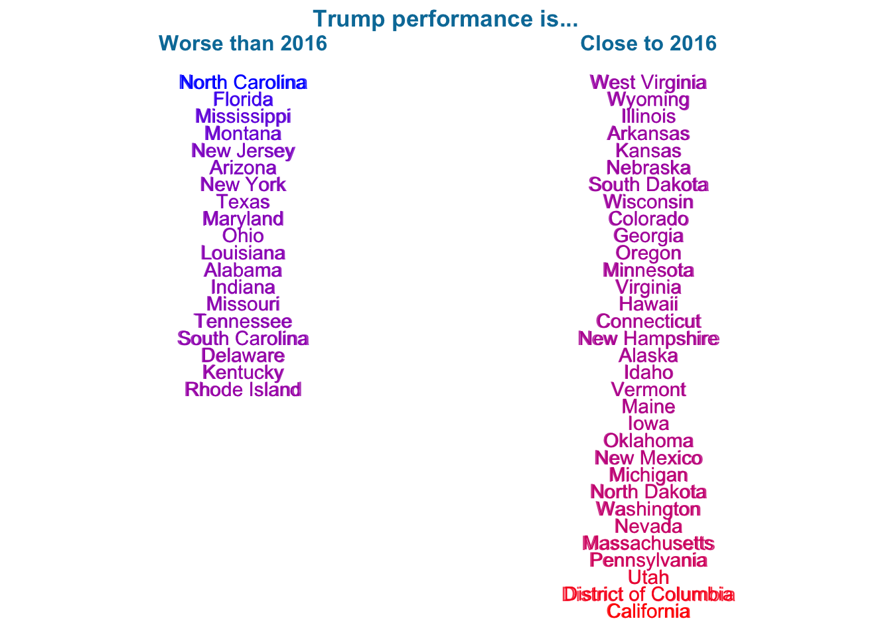
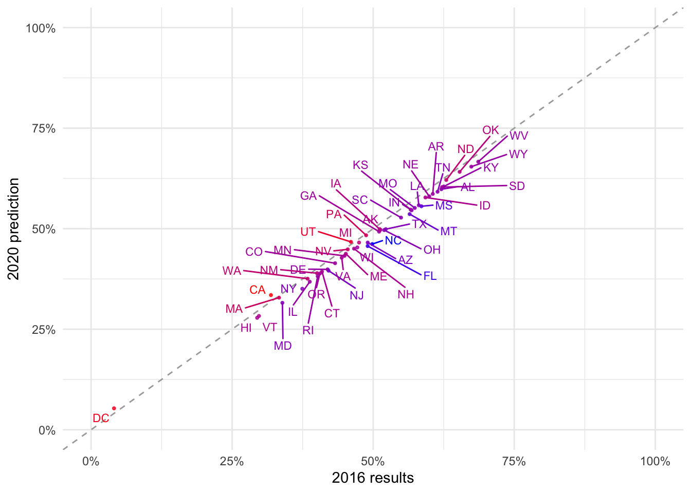

The table below categorizes states based on how Trump is performing in them relative to his performance in 2016.

* point estimate from 2020 poll aggregations
The plot below displays Donald Trump’s 2016 vote percentage in each state against average estimates from model simulations of the 2020 election. If a state is on the right side of the line, Trump is doing worse there than in 2016. If it is on the left side, he is doing better.
